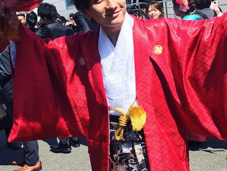
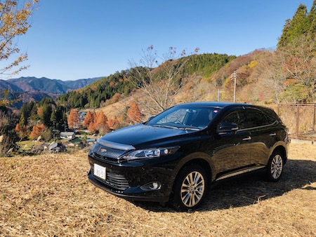

Hisadomi Satoshi
1999年3月2日佐賀県鳥栖市で誕生。現在24歳。 その年はノストラダムスの大予言の年で、人類が滅亡すると言われていたらしいです。 結果何も起こらず、小学校、中学校に進み、無事卒業。その後、福岡の有明高専入学。 そこでは電気工学科に所属。そしてどういうわけかボウリングにどハマりし寝ずに投げ続けてました。

20歳でトヨタ自動車に入社
高専卒業後、トヨタ自動車に入社。現在はAIによる自働検査を担当しています。
ひたすら判定精度、AIの実装（Python）を続ける日々です。
愛車は入社1週間目に買った、ハリアー（トヨタ）です。しかし次の車を考えてるのでおすすめあれば
ぜひ久富まで！！
